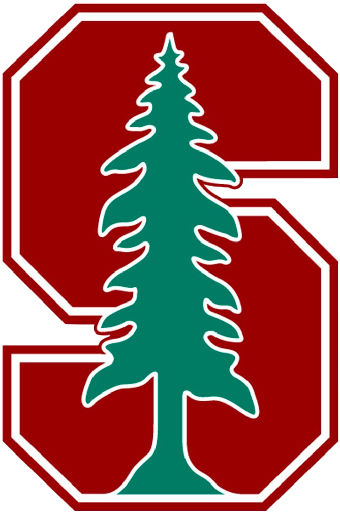

Certifications

Stanford University
Amazon Web Services

Hi, I'm Tanav Jalan!
I am an organized and dedicated candidate, successful at managing multiple priorities with a positive attitude. I have the willingness to take on added responsibilities to meet team goals. Currently, I am a Senior at ASU contributing to team success through dedication, detail-oriented, and effective communication. Definitely, motivated to learn, grow, and excel both as a human being and as a professional. I am able to work with minimal input to produce engaging, authoritative and error-free work. Finally, I would like to add that I am a hardworking and passionate job seeker with strong organizational skills eager to secure a job.
Institution Name: Arizona State University
Major: Computer Science
Minor: Mathematics
GPA: 3.8 / 4.0
Graduation: Expected May 2025
Institution Name: Jain International Resdiential School
GPA: 3.6 / 4.0
Specialization: Science Stream
Graduation: May 2021
Share your professional experience.
Outline your technical and professional skills.
Role: BSW | Program Coordinator at Arizona State University
Role: Program Coordinator Sr.| ASU University Academic Success Programs
Role: Associate Teaching Professor & co-Director, Grand Challenges Scholars Program at Arizona State University
Include your contact information.